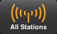

<!doctype html>
<!--[if lt IE 7]>      <html class="no-js lt-ie9 lt-ie8 lt-ie7"> <![endif]-->
<!--[if IE 7]>         <html class="no-js lt-ie9 lt-ie8"> <![endif]-->
<!--[if IE 8]>         <html class="no-js lt-ie9"> <![endif]-->
<!--[if gt IE 8]><!--> <html class="no-js"> <!--<![endif]-->
  <head>
    <meta charset="utf-8">
    <title></title>
    <meta name="description" content="">
    <meta name="viewport" content="width=device-width">

      <!-- Place favicon.ico and apple-touch-icon.png in the root directory -->

    <!-- build:css({.tmp,app}) styles/main.css -->
    <link rel="stylesheet" href="styles/main.css">
    <!-- endbuild -->

  </head>
  <body ng-app="somafmPlayerApp">
    <!--[if lt IE 7]>
      <p class="browsehappy">You are using an <strong>outdated</strong> browser. Please <a href="http://browsehappy.com/">upgrade your browser</a> to improve your experience.</p>
    <![endif]-->

    <div class="container player-container" ng-controller="MainCtrl" >
        <viewstack></viewstack>

        <div id="footer" class="row">
            <audioplayer station="$root.playingStation" ></audioplayer>

            <div class="nav row">
                <div class="col">
                    <a id="allStationsLink" ui-sref-active="selected" ui-sref="all-stations">
                        
                        
                   </a>
                </div>

                <div class="col">
                    <a id="favStationsLink" ui-sref-active="selected" ui-sref="fav-stations">
                        
                        
                    </a>
                </div>

                <div class="col" ng-if="showFavSongs">
                    <a id="favSongsLink" ui-sref-active="selected" ui-sref="fav-songs">
                        
                        
                    </a>
                </div>

                <!--
                <div class="col">
                    <a id="communityLink" ui-sref-active="selected" ui-sref="community">
                        
                        
                    </a>
                </div>
                -->

                <div class="col">
                    <a ng-if="!$root.playingStation" class="disabled">
                        <div class="dimmer"></div>
                        
                    </a>

                    <a ng-if="$root.playingStation" id="nowPlayingLink"
                       ui-sref-active="selected" ui-sref="now-playing({stationID: $root.playingStation._id})">
                        
                        
                    </a>
                </div>

            </div>

        </div>
    </div>


    <!-- Google Analytics: change UA-XXXXX-X to be your site's ID -->
    <!--
    <script>
       (function(i,s,o,g,r,a,m){i['GoogleAnalyticsObject']=r;i[r]=i[r]||function(){
       (i[r].q=i[r].q||[]).push(arguments)},i[r].l=1*new Date();a=s.createElement(o),
       m=s.getElementsByTagName(o)[0];a.async=1;a.src=g;m.parentNode.insertBefore(a,m)
       })(window,document,'script','//www.google-analytics.com/analytics.js','ga');

       ga('create', 'UA-XXXXX-X');
       ga('send', 'pageview');
    </script>
    -->

    <!--[if lt IE 9]>
    <script src="bower_components/es5-shim/es5-shim.js"></script>
    <script src="bower_components/json3/lib/json3.min.js"></script>
    <![endif]-->


    <!-- build:js scripts/vendor.js -->
    <!-- bower:js -->
    <script src="bower_components/jquery/dist/jquery.js"></script>
    <script src="bower_components/angular/angular.js"></script>
    <script src="bower_components/bootstrap-sass-official/assets/javascripts/bootstrap/affix.js"></script>
    <script src="bower_components/bootstrap-sass-official/assets/javascripts/bootstrap/alert.js"></script>
    <script src="bower_components/bootstrap-sass-official/assets/javascripts/bootstrap/button.js"></script>
    <script src="bower_components/bootstrap-sass-official/assets/javascripts/bootstrap/carousel.js"></script>
    <script src="bower_components/bootstrap-sass-official/assets/javascripts/bootstrap/collapse.js"></script>
    <script src="bower_components/bootstrap-sass-official/assets/javascripts/bootstrap/dropdown.js"></script>
    <script src="bower_components/bootstrap-sass-official/assets/javascripts/bootstrap/tab.js"></script>
    <script src="bower_components/bootstrap-sass-official/assets/javascripts/bootstrap/transition.js"></script>
    <script src="bower_components/bootstrap-sass-official/assets/javascripts/bootstrap/scrollspy.js"></script>
    <script src="bower_components/bootstrap-sass-official/assets/javascripts/bootstrap/modal.js"></script>
    <script src="bower_components/bootstrap-sass-official/assets/javascripts/bootstrap/tooltip.js"></script>
    <script src="bower_components/bootstrap-sass-official/assets/javascripts/bootstrap/popover.js"></script>
    <script src="bower_components/swfobject/swfobject/swfobject.js"></script>
    <script src="bower_components/angular-resource/angular-resource.js"></script>
    <script src="bower_components/angular-cookies/angular-cookies.js"></script>
    <script src="bower_components/angular-sanitize/angular-sanitize.js"></script>
    <script src="bower_components/angular-ui-router/release/angular-ui-router.js"></script>
    <script src="bower_components/angular-touch/angular-touch.js"></script>
    <!-- endbower -->
    <!-- endbuild -->

    <!-- build:js({.tmp,app}) scripts/scripts.js -->
    <script src="scripts/config.js"></script>
    <script src="scripts/app.js"></script>
    <script src="scripts/utils/conversion.js"></script>
    <script src="scripts/utils/transform.js"></script>
    <script src="scripts/utils/LocalStorage.js"></script>
    <script src="scripts/directives/directives.js"></script>
    <script src="scripts/controllers/main.js"></script>
    <script src="scripts/services/favorite-service.js"></script>
    <script src="scripts/services/data-service.js"></script>
    <script src="scripts/services/favorite-service.js"></script>
    <script src="scripts/services/player-service.js"></script>
    <script src="scripts/controllers/all-stations.js"></script>
    <script src="scripts/controllers/fav-stations.js"></script>
    <script src="scripts/controllers/fav-songs.js"></script>
    <script src="scripts/controllers/community.js"></script>
    <script src="scripts/controllers/now-playing.js"></script>
    <!-- endbuild -->

</body>
</html>
